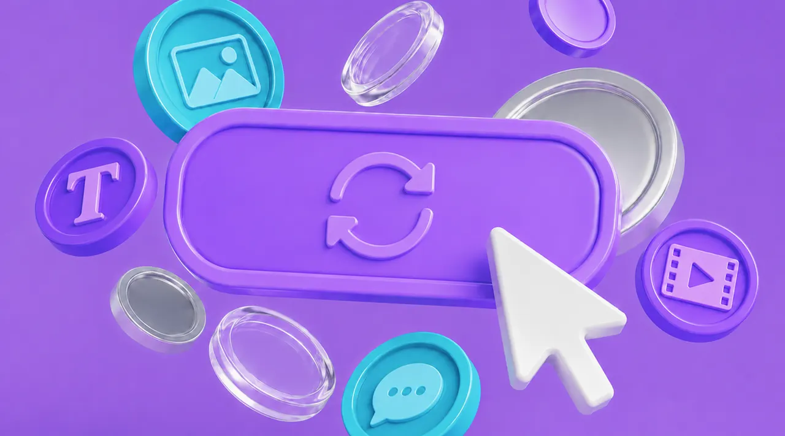

What is a design subscription service?
What they are, how they work week by week, when they make sense (and when they don't), and how to choose the right provider.


Design work grows faster than the team that does it. Every new campaign, channel, and launch adds more to the list, but the team stays the same size. That's how backlogs build and good people burn out. And if the design lands on you, it eats hours from the job you were hired to do.
It gets worse on its own. When there's not enough time, briefs get rushed. Rushed work comes back wrong and takes longer to fix. And the fixing eats what little time was left. A design subscription is built to break that loop, not just add hours.
What a design subscription is
A design subscription gives your team ongoing access to a dedicated design team for a fixed monthly fee. You buy a set number of design hours each month, and those hours cover the range of design your team gets through, from digital and print to web. Scope varies between providers, and some include motion or video while others don't.
It's built for teams with steady, recurring design work and not enough hands to keep up. Think of it as a retainer, but with clear hours and structure: you know how many hours you have each month and how they're being used.
What you get
A creative engine that keeps moving
Your backlog finally has somewhere to go, and it keeps going. A subscription runs on a pool of designers, so the work doesn't stop for annual leave, sick days, or one person's calendar.
Month-to-month flexibility
Most subscriptions run without lock-in contracts, so you can start, scale, or stop as the workload changes, and the service has to earn its keep every month.
No overhead riding on the fee
The monthly fee is the whole cost. There's no recruitment, no software licences, no equipment, and no leave or entitlements sitting on top of it.
A managed team, not a lone designer
You get a point of contact, and behind them someone managing the creative team and the scheduling for you. The shape varies by provider, but you're not briefing, chasing, and quality-checking one person on your own.
Every specialty under one subscription
"Graphic design" covers a lot of different jobs: brand, presentations, print, illustration, photo work, web graphics. A subscription gives you access to the different expertise as your briefs need it, instead of finding and vetting a separate freelancer for each.
Scales when you need it
Busy period coming? You upgrade the plan and the provider manages the extra designers. No hunting for a second vendor mid-campaign.
What changes for you
You get your time back
Every hour spent producing artwork is an hour not spent on strategy, planning, and the work you were hired for. With production off your plate, that time goes back where it belongs.
Your team stops burning out
The backlog stops growing because the volume finally has somewhere to go.
You get more output over time
The first few weeks are the stage where a designer learns your brand. Then it compounds: faster delivery, less explaining, fewer rounds, work landing right on the first pass, so the same hours produce more each month. The early investment is what the later output is built on.
Your spend matches your season
Scale the plan down through the quiet months and up for the peaks, so you're only paying for the capacity you're actually using, instead of carrying a fixed cost through the months that don't need it.
How it compares to the alternatives
A subscription rarely replaces everything else. It slots in alongside.
| Option | Good for | Breaks down when | A subscription fits when |
|---|---|---|---|
| Freelancers | A specific project or a specialist skill you need for a short stretch. | The work becomes ongoing. Availability gets thin as other clients compete for the same hours, and managing several freelancers starts eating the time you were trying to save. | Design is a steady, ongoing load, not a one-off. |
| Agencies | Strategy and senior creative direction, a brand build, a big campaign concept. | You need steady, high-volume production. Agency pricing is built for big projects, not weekly volume, and the layers of approvals can make turnarounds slower than day-to-day work needs. | You need the ongoing execution, at a fraction of agency rates. |
| In-house | Enough steady work to justify a full salary, and someone embedded in the business day to day. | You need capacity now (hiring is slow), or your volume moves around too much to justify a permanent, fixed cost. | You need to scale with the workload without a permanent hire. |
| DIY tools | Small businesses and simple, templated work. If you're early or your needs are basic, a DIY tool is genuinely cost-effective and worth using. | The work gets more involved, or your own hours become too valuable to spend on production. | Production volume is high enough that doing it yourself costs you more in time than it saves in budget. |
So, is a design subscription right for you?
It makes sense when:
- Your design demand is growing faster than you can hire for it. Hiring takes months. The work doesn't wait.
- Your team has built up a backlog and is starting to burn out. Everyone's working hard but the queue never gets shorter.
- You're stuck doing design production when you should be doing strategy, and it's not even your main job.
- Your workload fluctuates seasonally and you need to scale up during campaigns, launches, appeal seasons, or EOFY.
- You've tried freelancers, but briefing, chasing, and checking their work eats more of your time than it saves.
It doesn't make sense when:
- Your design needs are occasional, seasonal, or mostly light updates to existing assets, with quiet, low-hour stretches in between. At that level, an ad-hoc freelancer suits the need better than a monthly commitment.
- You're an early-stage business that just needs something quick and cheap to get up and running. A DIY tool or a junior talent marketplace will get you launched faster and for less; a subscription is for when design becomes an ongoing load.
- You need high-level brand strategy or brand development. A dedicated brand specialist is the better fit for the discovery, research, and strategy work up front; a subscription team takes it from there and handles the ongoing production.
The best results come from teams that know what they want and need help delivering it across every channel.
How to choose a provider
Choosing comes down to your requirements, not their features. Four things to settle, in order:
1. Decide what you need: production only, or with design thinking
Some providers are cheaper and fast, and they'll produce exactly what you specify. Others are built to interpret: they'll take a direction, make the judgement calls, push back when something won't work, and lift the output past what you asked for. Neither is wrong, but they cost differently.
2. Your budget sets the designer level you get
You get what you pay for in this category, and the gap between levels is real: a senior who can craft to a high standard and bring solid design thinking costs more than a mid-level designer working to a brief.
3. Work out how much design you need each month
Plans are sized by volume, so your monthly hours decide the tier before any feature does. Add up a typical month, or use our free capacity calculator to estimate your monthly hours against real production benchmarks.
4. Check what you can test before you commit
A trial period, a money-back guarantee: some way to see the real service before you're locked in. Portfolios can look impressive; a trial shows you the real thing. If there's no way to try and no easy way to leave, that tells you something.
Frequently asked questions
How much does a design subscription cost?
It scales with how many production hours you need each month, so a team sending 30 hours of work and a team sending 90 shouldn't pay the same. Work out your own number first, then compare it against published plans. If a provider won't show you a price before you talk to sales, that's worth noting.
Some design subscriptions are around $500 a month. Are they legitimate?
Yes, and for the right work they're a sensible buy. What differs is what sits behind the price. At that level you're usually getting a junior designer working from clear instructions, which suits adaptation work: resizes, variants, template rollouts, where the creative decisions are already made. What's usually missing is the layer around the designer. Often there's no coordinator checking your brief is ready before work starts, and nobody reviewing the work before it reaches you. That's fine when your brief is airtight and the task is simple. It costs you revision rounds when it isn't.
Is "unlimited design" actually unlimited?
No. It means unlimited requests in a queue, worked on one or two at a time. Your real capacity is set by how fast the queue moves, which is why two "unlimited" plans at different prices deliver very different amounts of work. Ask how many tasks progress simultaneously; that number is the plan.
Do you get a dedicated designer, or a rotating one?
Check this one carefully, because "dedicated" often describes the account manager rather than the designer. Some services give you one consistent point of contact while the design work rotates between whoever has capacity that week, so nobody holds your brand for long and context gets re-explained with every brief. Mid-range plans usually run semi-dedicated designers, shared across a small number of accounts. If your monthly hours approach a full-time load, you're generally getting someone dedicated to you.
Is there a lock-in contract?
Usually not. Most design subscriptions run month to month and can be paused or cancelled, and the notice period ranges from none to 30 days depending on the provider. Some also offer quarterly or annual terms at a slightly better rate, so it's worth weighing the saving against the flexibility you give up. Check what you're signing before you commit.
How fast is the turnaround?
Typically 1 to 2 business days for standard requests, longer for complex work like campaign concepts or long documents. The honest answer is that turnaround depends on brief quality as much as the provider: a complete brief moves in days, a vague one bounces in revision rounds.
Can AI design tools replace a design subscription?
For part of the work, they genuinely help: recreating quick variants, resizing something that already exists. What they don't replace is the judgement around the work: deciding what's right for your brand, noticing what's subtly off, and owning a date. Someone still has to brief the tool, review what comes back, and fix what doesn't land, and that someone is usually you. We use AI in our own production to move volume faster, on the repetitive end of the work: adaptations, resizes, versioning. The creative thinking stays with the designer, because that's the part a tool can't own.
Can a design subscription replace an in-house designer?
Sometimes, and sometimes it's the wrong move. Both have real pros and cons depending on your stage, your volume, and how embedded you need design to be. One thing holds either way: when you need capacity fast, a subscription gets there faster. Hiring takes months; a subscription starts in days. Many teams run both: in-house for direction, subscription for volume.